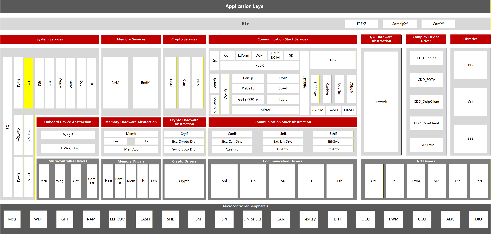
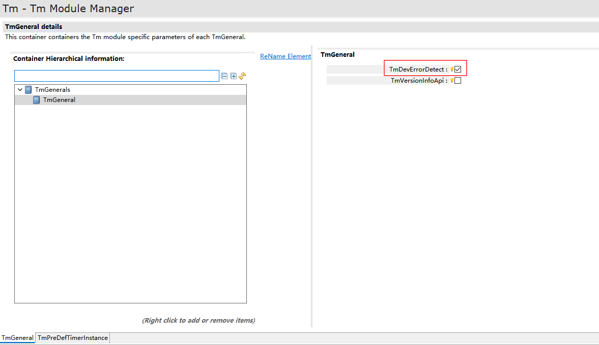
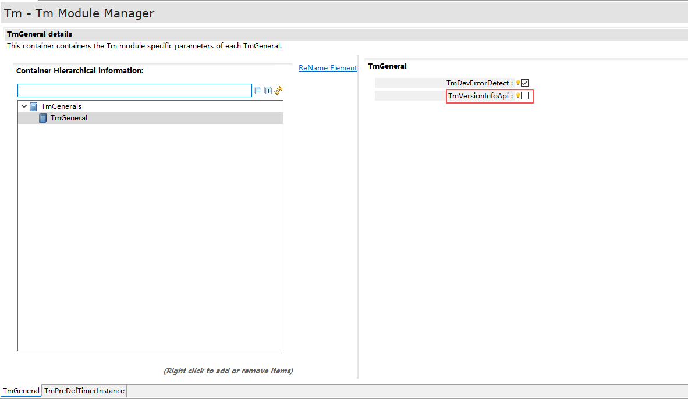
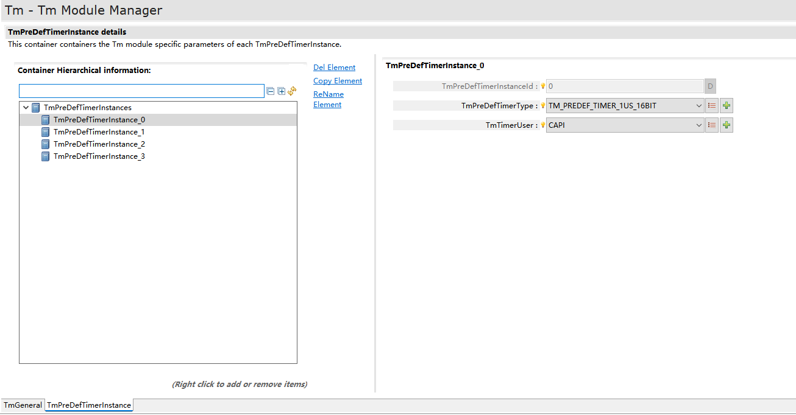
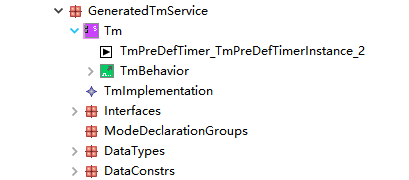

Tm¶
文档信息(Document Information)¶
版本历史(Version History)¶
日期 |
作者 |
版本 |
状态 |
说明 |
|---|---|---|---|---|
2025/01/24 |
xudong.guan |
V0.1 |
发布 |
首次发布 |
2025/04/04 |
xudong.guan |
V1.0 |
发布 |
正式发布 |
2025/07/30 |
xudong.guan |
V1.1 |
发布 |
版本升级R24-11 |
2025/12/30 |
xudong.guan |
V2.0 |
发布 |
正式发布 |
参考文档(References)¶
编号(Number) |
分类(Classification) |
标题(Title) |
版本(Version) |
|---|---|---|---|
1 |
Autosar |
AUTOSAR_CP_SRS_TimeService.pdf |
R24-11 |
2 |
Autosar |
AUTOSAR_CP_SWS_TimeService.pdf |
R24-11 |
术语与简写(Terms and Abbreviations)¶
术语(Terms)¶
术语(Term) |
解释(Explanation) |
|---|---|
GPT Predef Timer |
GPT Predef Timer是由GPT driver提供的自由运行的向上计数器。哪些GPT Predef Timer可用取决于硬件(时钟、硬件定时器、预分频器、定时器寄存器宽度等)和配置。GPT Predef Timer具有预定义的物理时间单位和范围(A GPT Predef Timer is a free-running up counter provided by the GPT driver. Available GPT Predef Timers depend on hardware (clock, hardware timers, prescaler, timer register width, etc.) and configuration. GPT Predef Timers have predefined physical time units and ranges.) |
Time Service Predef Timer |
Time Service Predef Timer是具有预定义物理时间单位和范围的自由运行向上计数器。其硬件定时器功能基于对应的GPT Predef Timer实现。Time Service模块会为每个Predef Timer提供一组API services。用户可实例化任意数量的定时器(仅受可用内存限制)，且各定时器实例的使用完全相互独立。(A Time Service Predef Timer is a free-running up counter with predefined physical time units and ranges. Its hardware timer functionality is based on corresponding GPT Predef Timers. The Time Service module provides a set of API services for each Predef Timer. Users can instantiate any number of timers (limited only by available memory), and timer instances operate completely independently.) |
Timer instance |
timer instance是API数据类型Tm_PredefTimer…bitType的数据对象，这意味着它是Time Service Predef Timer在用户软件层面的实例化产物。用户可实例化任意数量的定时器(仅受可用内存限制)。通过API services提供的方法，各timer instance的使用可完全相互独立。(A timer instance is a data object of API data type Tm_PredefTimer…bitType, meaning it instantiates a Time Service Predef Timer at the user software level. Users can instantiate any number of timers (limited only by available memory). Through methods provided by API services, timer instances operate completely independently.) |
Reference time |
reference time是为每个timer instance存储的时间值。它是API数据类型Tm_PredefTimer…bitType中一个与实现相关的元素。(Reference time is the time value stored for each timer instance. It is an implementation-specific element of the API data types Tm_PredefTimer…bitType.) |
简写(Abbreviations)¶
简写(Abbreviation) |
全称(Full name) |
解释(Explanation) |
|---|---|---|
GPT |
General Purpose Timer |
通用定时器模块，提供高精度定时功能，提供接口作为Tm模块获取时间来源基础。(General Purpose Timer module providing high-precision timing functions and interfaces as time source for Tm module.) |
nop |
No operation |
无操作。 |
简介¶
如图所示Tm模块位于系统服务，BSW和Application都可以使用。Tm模块可以越过一个软件层来访问GPT，而GPT不能与其他MCAL模块直接产生交互。
复杂驱动和ECU抽象层与GPT存在交互，但不受Tm模块影响。
Complex drivers and the ECU Abstraction Layer interact with GPT but remain unaffected by the Tm module.

Tm架构层次图 (Tm Architecture Hierarchy Diagram)¶
Tm Architecture Hierarchy Diagram
如 Tm架构层次图 (Tm Architecture Hierarchy Diagram) 所示，Tm模块处于AUTOSAR架构中的系统服务层。
功能描述(Functional Description)¶
公共特性(Public Features)¶
多核多分区功能(Multi-core and Multi-partition Features)¶
None
Memmap功能(Memmap Features)¶
None
独占区功能(Exclusive Area Features)¶
None
模块特性(Module Features)¶
Tm功能介绍¶
Tm模块通过直接访问GPT硬件，经过一定转换后为其他BSW模块或者Application提供接口从而可以初始化一个时钟，随时获取其经过时间，或者可以主动忙碌等待一段时间，并可以对时钟进行偏移等操作。
The Tm module directly accesses GPT hardware and, after conversions, provides interfaces for other BSW modules to initialize timers, retrieve elapsed time, perform busy waits, and apply clock offsets.
不同种类的时钟，也称为”Tm预定义时钟”，在硬件的和配置支持下存在。每一个预定义时钟都有一个预定义的tick duration(最小单位记录时长)和一个预定义的字节数(物理范围)。这些预定义时钟是基于GPT预定义时钟的，这是GPT驱动提供的自由运行的硬件时钟。
Various timer types, termed “Tm predefined timers”, are available with hardware and configuration support. Each predefined timer has a predefined tick duration (minimum time unit) and bit width (physical range). These predefined timers are based on GPT predefined timers - free-running hardware counters provided by the GPT driver.
共有以下四种预定义时钟：1us16bit，1us24bit，1us32bit，100us32bit，其中us代表分辨率，bit代表最大宽度。
那么，Tm提供的服务也都支持这四种时钟。相关服务有：Tm_ResetTimer, Tm_GetTimeSpan, Tm_ShiftTimer, Tm_SyncTimer, Tm_BusyWait，注意100us不支持BusyWait。
Tm services support all four timer types. Related services include: Tm_ResetTimer…, Tm_GetTimeSpan…, Tm_ShiftTimer…, Tm_SyncTimer…, Tm_BusyWait… Note: 100us timers do not support BusyWait.
集成(Integration)¶
文件列表(File List)¶
静态文件(Static Files)¶
文件(File) |
描述(Description) |
|---|---|
Tm.c |
Tm模块源码文件，包含需要使用的宏定义，内部变量，内部函数，全局函数。(Source code files of the Tm module, containing required macro definitions, internal variables, internal functions, and global functions.) |
Tm.h |
Tm模块头文件，包含需要使用的宏定义，类型定义，配置结构体声明，外部函数声明。(Header file of the Tm module, containing required macro definitions, type definitions, configuration structure declarations, and external function declarations.) |
Tm_MemMep.h |
Tm的内存映射定义文件。(Memory mapping definition file of the Tm module.) |
动态文件(Dynamic Files)¶
文件(File) |
描述(Description) |
|---|---|
Tm_Cfg.c |
Tm模块配置源码文件，包含需要使用的宏定义，结构体定义等。 |
Tm_Cfg.c |
Tm模块配置头文件，包含需要使用的宏定义。 |
错误处理(Error Handling)¶
开发错误(Development Errors)¶
Error code |
Value[hex] |
Description |
|---|---|---|
TM_E_PARAM_POINTER |
0x01 |
调用API服务的时候传入了非法(例如空指针)的指针。(Invalid pointer (e.g., null pointer) passed during API service call.) |
TM_E_PARAM_VALUE |
0x02 |
调用API服务的时候传入了非法的参数。 |
TM_E_PARAM_SYNC |
0x03 |
调用API服务Tm_SyncTime的计时器实例不兼容 |
TM_E_STATE |
0x04 |
调用Tm_ResetTimer时对应的定时器未经过初始化。 |
产品错误(Product Errors)¶
None
运行时错误(Runtime Errors)¶
Error code |
Value[hex] |
Description |
|---|---|---|
TM_E_HARDWARE_TIMER |
0x03 |
访问底层硬件计时器(GPT Predef Timer)失败。 |
接口描述(Interface Description)¶
类型定义¶
Type Name |
Type |
Description |
|---|---|---|
Tm_PreDefTimerType |
struct Tm_PreDefTimerTypeTag |
|
Tm_ConfigType |
struct Tm_ConfigTypeTag |
|
Tm_PreDefTimerInstanceType |
enum |
提供的服务¶
Tm_Init¶
void Tm_Init(const Tm_ConfigType *config)
This service initializes the Time Service module.
- Sync/Async
Synchronous
- Reentrancy
Non Reentrant
Parameters
Dir |
Name |
Description |
|---|---|---|
[in] |
config |
Pointer to Tm configuration data. |
- Return type
void
Tm_GetVersionInfo¶
void Tm_GetVersionInfo(Std_VersionInfoType *versioninfo)
Returns the version information of this module.
- Sync/Async
Synchronous
- Reentrancy
Reentrant
Parameters
Dir |
Name |
Description |
|---|---|---|
[out] |
versioninfo |
to where to store the version information of this module. |
- Return type
void
Tm_ResetTimer¶
Std_ReturnType Tm_ResetTimer(uint32 timerId)
Resets a timer instance (user point of view).
- Sync/Async
Synchronous
- Reentrancy
Reentrant but not for the same timerId.
Parameters
Dir |
Name |
Description |
|---|---|---|
[out] |
timerId |
A timer instance handle. |
- Return type
Std_ReturnType
Return values
Name |
Description |
|---|---|
E_OK |
The underlying GPT driver service has returned E_OK. |
E_NOT_OK |
The underlying GPT driver service has not returned E_NOT_OK. |
Tm_GetTimeSpan¶
Std_ReturnType Tm_GetTimeSpan(uint32 timerId, uint32 *timeSpan)
Delivers the time difference (current time - reference time).
- Sync/Async
Synchronous
- Reentrancy
Reentrant
Parameters
Dir |
Name |
Description |
|---|---|---|
[in] |
timerId |
A timer instance handle. |
[out] |
timeSpan |
Pointer to location where the time will be stored. |
- Return type
Std_ReturnType
Return values
Name |
Description |
|---|---|
E_OK |
The underlying GPT driver service has returned E_OK. |
E_NOT_OK |
The underlying GPT driver service has returned E_NOT_OK. |
Tm_ShiftTimer¶
void Tm_ShiftTimer(uint32 timerId, uint32 timeValue)
Shifts the reference time of the timer instance.
- Sync/Async
Synchronous
- Reentrancy
Reentrant but not for the same timer instance
Parameters
Dir |
Name |
Description |
|---|---|---|
[in] |
timerId |
A timer instance handle. |
[out] |
timeValue |
Time value in in units (e.g. us), the reference time has to be shifted. |
- Return type
void
Tm_SyncTimer¶
void Tm_SyncTimer(uint32 timerIdSrc, uint32 timerIdDst)
Synchronizes two timer instances.
- Sync/Async
Synchronous
- Reentrancy
Reentrant but not for the same timer instance
Parameters
Dir |
Name |
Description |
|---|---|---|
[in] |
timerIdSrc |
Source timer instance defined by the user. |
[out] |
timerIdDst |
Destination timer instance defined by the user. |
- Return type
void
Tm_BusyWait1us¶
Std_ReturnType Tm_BusyWait1us(uint8 WaitingTimeMin)
Performs busy waiting by polling with a guaranteed minimum waiting time.
- Sync/Async
Synchronous
- Reentrancy
Reentrant
Parameters
Dir |
Name |
Description |
|---|---|---|
[in] |
WaitingTimeMin |
Minimum waiting time in microseconds. |
- Return type
Std_ReturnType
Return values
Name |
Description |
|---|---|
E_OK |
The underlying GPT driver service has returned E_OK. |
E_NOT_OK |
The underlying GPT driver service has returned E_NOT_OK. |
依赖的服务(Dependent Services)¶
强制接口(Mandatory Interfaces)¶
API Function |
Header File |
Description |
|---|---|---|
Det_ReportRuntimeError |
Det.h |
Service to report runtime errors. If a callout has been configured then this callout shall be called. |
Gpt_GetPredefTimerValue |
Gpt.h |
Delivers the current value of the desired GPT Predef Timer. |
可选接口(Optional Interfaces)¶
API Function |
Header File |
Description |
|---|---|---|
Det_ReportError |
Det.h |
Service to report development errors |
服务封装¶
Tm通过TmTimerUser配置项来决定是否对该定时器提供基于C/S的服务封装端口，当配置为PORT时，Tm将提供封装服务，否则不提供。
服务封装PORT¶
Port Name |
Kind |
Interface |
Description |
|---|---|---|---|
TmPreDefTimer_{Name} |
ProvidedPort |
TmPreDefTimerService |
Tm模块的预置定时器服务封装端口 |
服务封装Interface¶
Interface Name |
Operations |
Description |
|---|---|---|
TmPreDefTimerService |
GetTimeSpan, ResetTimer, ShiftTimer |
Tm模块的预置定时器服务封装接口和包含的操作 |
TmPreDefTimerService接口操作¶
Tm提供的Interface包含三种操作：GetTimeSpan, ResetTimer, ShiftTimer，分别用于获取时间间隔，重置定时器和偏移定时器。以下是Operation对应的函数接口。
Operation |
API |
Return |
Description |
|---|---|---|---|
GetTimeSpan |
Tm_GetTimeSpan |
E_OK/E_NOT_OK |
用于获取时间间隔 |
ResetTimer |
Tm_ResetTimer |
E_OK/E_NOT_OK |
用于重置定时器时间 |
ShiftTimer |
Tm_ShiftTimer |
E_OK/E_NOT_OK |
用于偏移定时器时间 |
配置¶
基础配置说明(Basic Configuration Description)¶
开发错误检测开关(Development Error Detection Switch)¶
Tm模块提供TmDevErrorDetection开关，用于控制是否开启Tm模块的开发错误检测功能。
The Tm module provides the TmDevErrorDetection switch, which is used to control whether to enable the development error detection function of the Tm module.

Tm配置图-开发错误检测(Tm Configuration Diagram - Development Error Detection)¶
版本获取开关(Version Acquisition Switch)¶
Tm模块提供版本获取开关，用于控制是否获取版本号。
The Tm module provides a version acquisition switch to control version number retrieval.

Tm配置图-版本获取开关 (Tm Configuration Diagram - Version Acquisition Switch)¶
预定时器实例(Predefined Timer Instance)¶
用户可以根据定时器的用途，创建多个预定时器实例，每个实例有唯一的标识符（TmPreDefTimerInstanceId）、定时器类型（TmPreDefTimerType）和调用方式（TmTimerUser）。 标识符自动生成，无需手动配置。 定时器类型支持4种预定时器，分别是1us16bit，1us24bit,1us32bit和100us32bit。 调用方式存在CAPI和PORT两种类型，CAPI表示直接调用，供BSW模块使用，而PORT表示服务调用，为SWC提供基于时间的服务。其中CAPI方式不限制定时器类型，PORT方式只允许使用1us32bit定时器类型。
Users can create multiple predefined timer instances based on the intended use of the timer. Each instance has a unique identifier (TmPreDefTimerInstanceId), a timer type (TmPreDefTimerType), and a calling method (TmTimerUser). The identifier is generated automatically and requires no manual configuration. Four predefined timer types are supported: 1us16bit, 1us24bit, 1us32bit, and 100us32bit. Two calling methods are available: CAPI and PORT: CAPI (Direct Call): Used by BSW modules, with no restrictions on timer type. PORT (Service Call): Provides time-based services for SWCs, and only supports the 1us32bit timer type.

Tm配置图-预定时器实例 (Tm Configuration Diagram - Predefined Timer Instance)¶
服务实例(Service Instance)¶
在预定时器实例配置章节中，当存在定时器实例的类型为1us32bit，且调用方式为PORT时，Tm模块将生成服务实例，此时提供该定时器实例的相关Port和interface供SWC使用。

Tm配置图-服务实例 (Tm ServiceInstance)¶